Microsoft Teams¶
Channel Configuration
To configure Microsoft Teams notification channel, you need to configure a workflow In Microsoft Teams:
Open Microsoft Teams application.
Select the “Workflow” app from the panel on the left side of the application and click button.
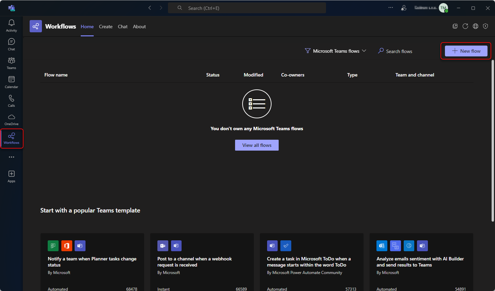If you don’t see the “Workflow” app in the panel, you can add it by clicking on the “Apps” button and searching for the “Workflow” app.
Select the “Post to a channel when a webhook request is received” template. You can use a searchbar to find the template.
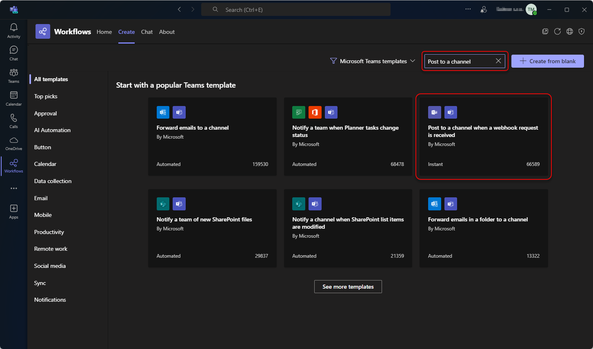Fill the Flow name, or leave a default value. Click button.
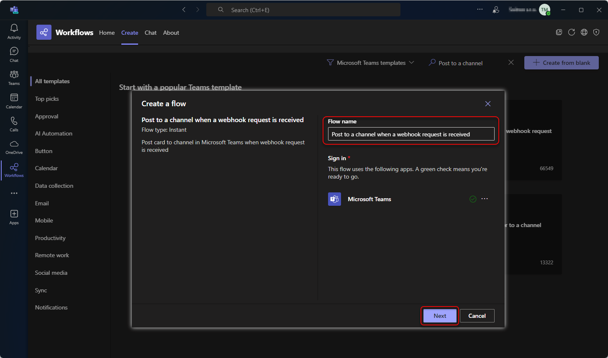Click button.
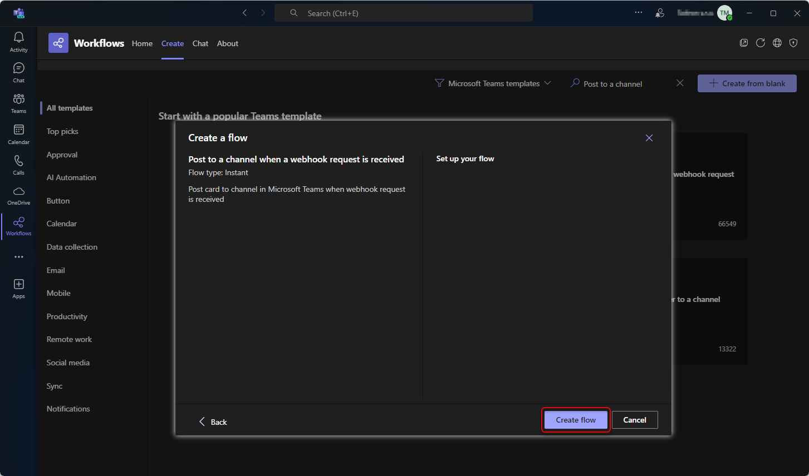Copy the webhook URL so you can use it in notification configuration as a message recipient. Click button.
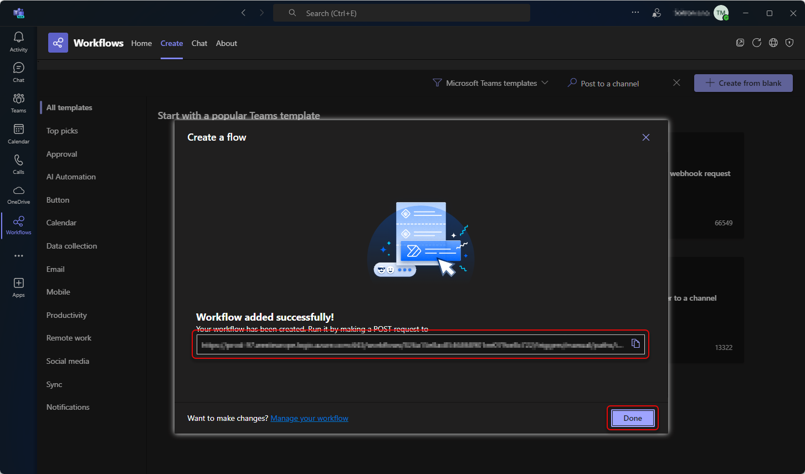Switch to the “Home” tab and click on the newly created Workflow.
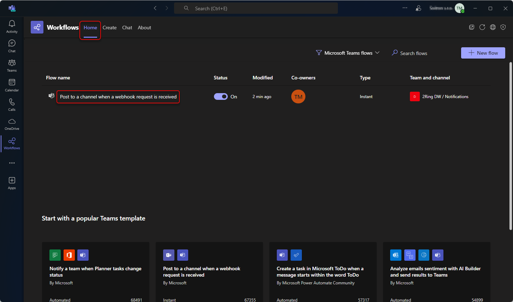Click on the “Edit” button.
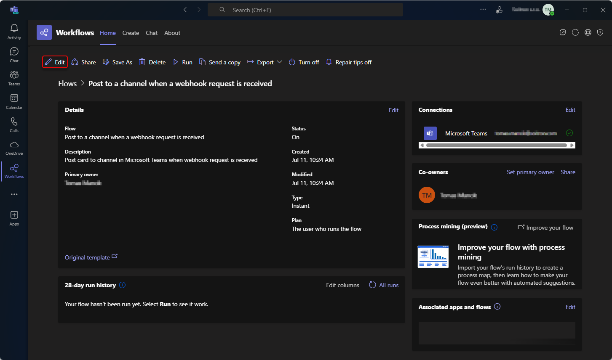Click on the “Send each adaptive card” action.
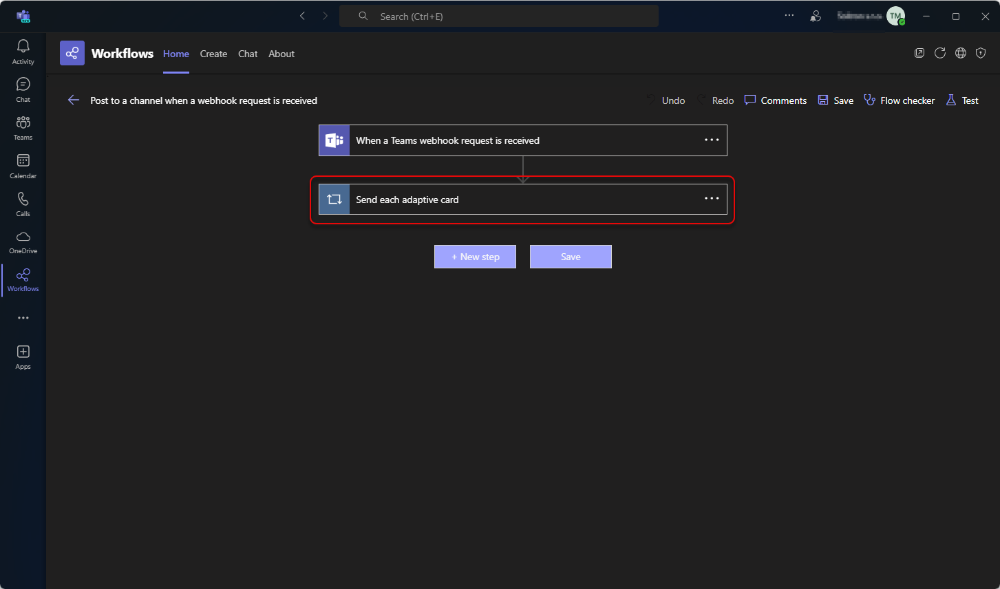click on the “Post your own adaptive card as the Flow bot to a channel”.
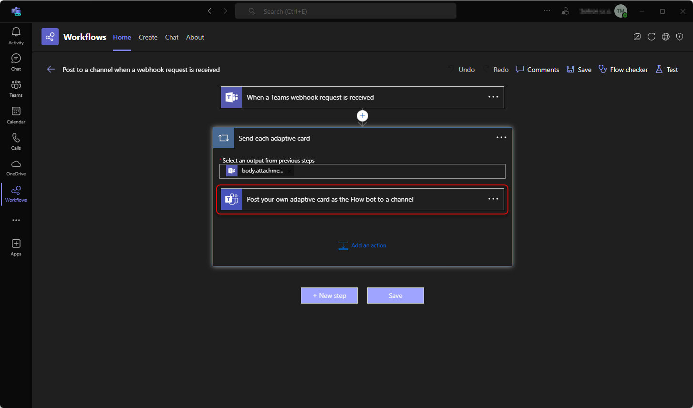Fill out the required fields and click “Save”.
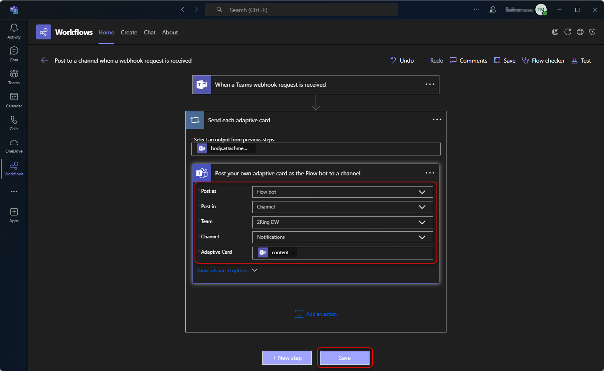Post as - selected who would be the author of the message. Recommended and tested options are: “User” and “Flow bot”.
Flow bot cannot post messages to the private channel. If you want to post messages to the private channel, you need to select the “User” option in the “Post as” field.
The owner of the flow is always displayed as the author of the notification. If you want to change the author, you can create a dedicated account and attach the created connection to the specific flow. To do that, click on the three dots in the top right corner of the flow and select “Add new connection”. Login with dedicated account and select it from My connections.
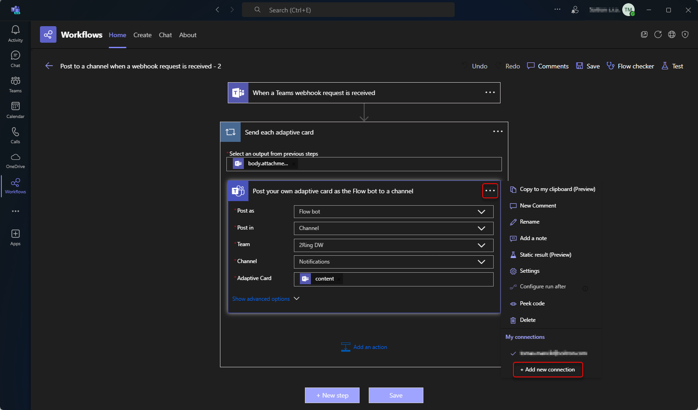Post in - select where you want to post messages.
Team - select the team from the dropdown where you want to post messages.
Channel - select the channel from the dropdown where you want to post messages.
Adaptive Card - select the content of the adaptive card. You can leave this field with the “content” value.
DW Configuration
In DW, webhook URL is used as a recipient of a notification message.
Microsoft Teams message format documentation can be found here.